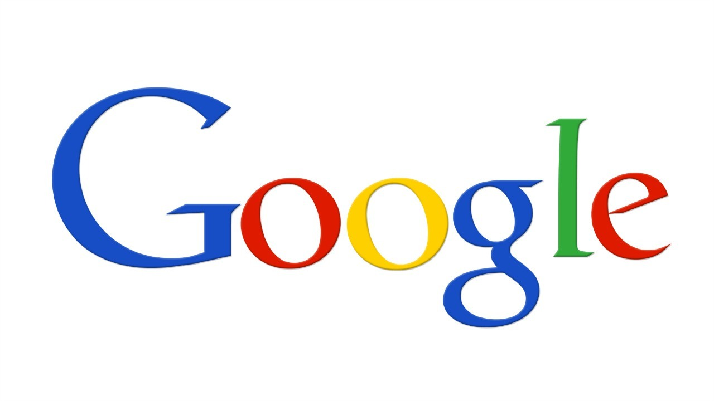

Overview
-
A company that has always excited me, not so much as it used to (I’ll explain) is Google. When I was in tech school taking a computer science course, I would always dream about working at Google because it seems like the gold-standard of technology companies, and it is. They have everything, do everything, and know everything about you and what you want. In someways this is great, but in others it is bad for obvious reasons: snooping, hackers, etc. Unfortunately, big companies take advantage of power and so I am not as big of a fan, but I still like Google. I am good at many things, particularly working with Linux systems including Android development and modifying, writing code and scripts in various popular languages and I am also a fan of teamwork. On the daily, I use email (Gmail), my Huawei (Android) phone, online office tools (Google Docs), GNU/Linux machines, text editors and terminals and version control tools. I use email for day to day communication, my phone to use various apps and perform many tasks, online office tools for school projects mostly and drive storage, GNU/Linux because it is my preferred operating system mostly since it is not bogged down with bloatware, text editors for programming and terminals for installing software, compiling and system maintenance and version control tools for keeping my code backed-up, public, and easy to understand. This would never happen, but never say never. I would love to spend many years, even the rest of my life learning how to develop a free (as in freedom and gratis), universal, stable, user-friendly alternative operating system to Mac and Windows, based on the Linux kernel, using some parts of the GNU userland, that does not steal your info to sell ads (Ubuntu Linux and Amazon), and makes it into the mainstream. Dream on.. What I find challenging about this is 1. having the money and workforce willing to crank out such a project without sneaky corporate tactics compromising the integrity of the philosophy 2. trying to plan the operating system out realistically 3. figuring out ways to have average users get away from the normal 4. trying to make an operating system capable of installing cross-platform applications such as .exe to .deb. to .app, etc. I like making small free programs for myself and just to put on GitHub for Unix-like operating systems. I typically write them in C++ because I love that language a lot and it was the first one that I learned besides HTML which is a markup language. I know that it is bad, but I do not like networking. I would much rather try to install Windows 98 on a new Macbook than set-up a new network or fix networking issues. Me and networks do not get along. I guess I feel that way because I have been traumatized since a little kid with slow internet (God forbid, right?), a wireless card on my brand new Windows 8 HP laptop from middle-school, that needed to be constantly unplugged and plugged back in again to get my WiFi to work, people DoSing my internet from Xbox online, me DoSing myself accidentally, Ethernet cords that break somehow, and two routers that fried within a month of each other… All-in-all, I love computers and I will suck it up and work with whatever in the field because that is just who I am. I am not a snob with computer jobs!